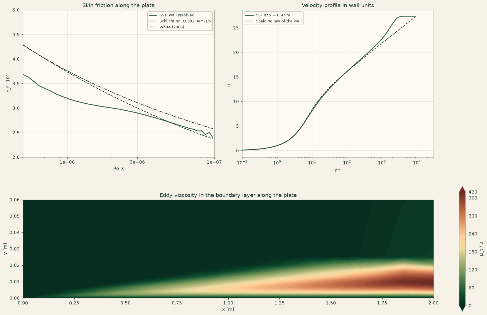
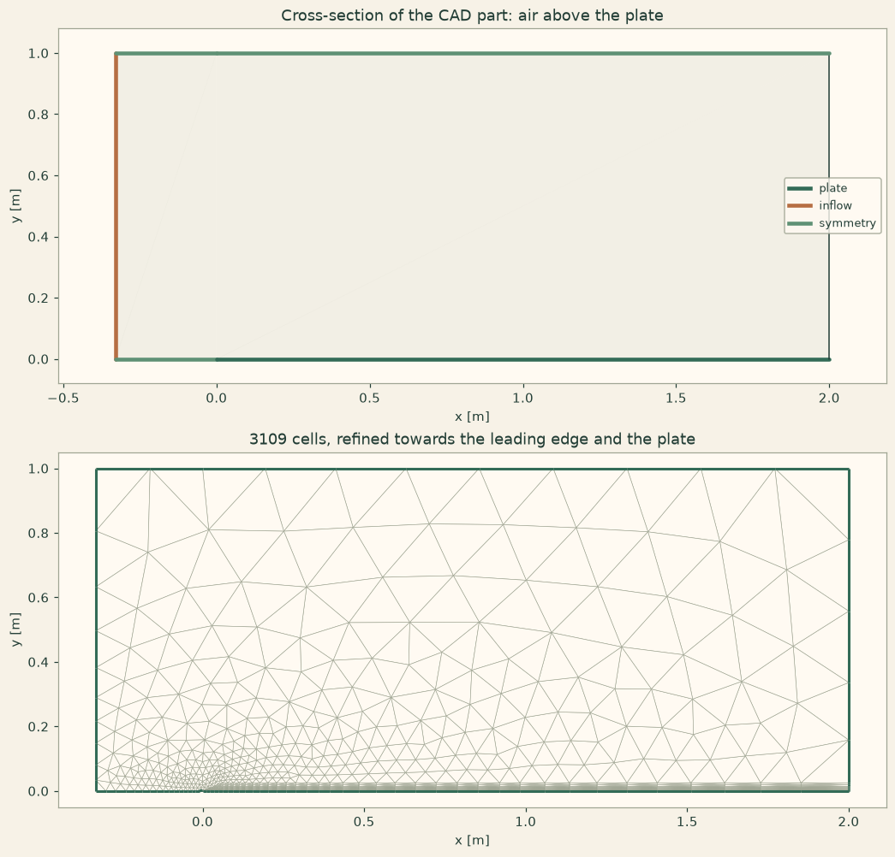

Docs › Examples › Turbulent boundary layer on a flat plate
Turbulent flow · 2D
Turbulent boundary layer on a flat plate
The turbulent boundary layer on a 2 m flat plate without pressure gradient at a Reynolds number of five million per metre, the standard verification case for turbulence models.
Run locally with OneSimulation. The example downloads are free. Running them requires an activated runtime. Runtime Alpha 0.2.1a7 · CPython 3.13 on macOS (Apple Silicon), Ubuntu 22.04 (x86-64), and Windows x64. Installation and activation · View pilot plans. Scope of the reference checks.

What it computes
The air above the plate is read from a STEP file and cut to its cross-section; OneSimulation solves the steady Reynolds-averaged Navier-Stokes equations with the k-omega SST model as an option of the incompressible flow model, on a triangle mesh with boundary-layer rows down to y+ of about 0.3, Taylor-Hood elements for velocity and pressure, linear elements for k and the logarithm of omega, pseudo-time continuation and Newton. The script that builds the STEP file comes with the notebook.
What it checks
Beyond Re_x = 4.8 million the skin friction follows Schlichting's 0.0592 Re_x^-1/5 within 3 % (-0.2 % at x = 0.97 m, +2.9 % at 1.9 m) and the SST reference of the NASA Turbulence Modeling Resource (0.00268 at x = 0.97 m) within 1.5 %; it lies 5 % below White's correlation, as the SST model does; the velocity profile follows Spalding's law of the wall within 0.2 u+ up to y+ = 100.
Geometry
The notebook starts at the import of the CAD file turbulent_flat_plate_zero_pressure_gradient.step: STEP (AP242), readable by any CAD program, with the names of the faces that the boundary conditions use. Put it next to the notebook.

The geometry script
The script turbulent_flat_plate_zero_pressure_gradient_geometry.py builds the geometry with the CAD objects of OneSimulation and writes the file. Change a dimension there, run it, and run the notebook again.
"""Geometry of the OneSimulation example "Turbulent boundary layer on a flat plate".
Builds the air above a flat plate as a slab 0.05 m thick with the CAD objects of OneSimulation and
writes turbulent_flat_plate_zero_pressure_gradient.step. The plate is 2 m long and starts at x = 0;
the stream enters 0.33 m upstream of its leading edge, the far field lies 1 m above it. The faces
are named for the example: inflow, outflow, top, lead (the symmetry plane ahead of the plate),
plate, and the two span faces sides. The example computes on the cross-section z = 0.025 m.
"""
from onesim.cad.d3 import Box
lead = Box(length=0.33, width=1.0, height=0.05, origin=(-0.33, 0.0, 0.0))
plate = Box(length=2.0, width=1.0, height=0.05, origin=(0.0, 0.0, 0.0))
air = lead | plate
bottom = lambda face: face.kind == "plane" and abs(face.center[1]) < 1e-9
air = air.grouped(
inflow=air.select(
faces=lambda face: face.kind == "plane" and abs(face.center[0] + 0.33) < 1e-9
),
outflow=air.select(
faces=lambda face: face.kind == "plane" and abs(face.center[0] - 2.0) < 1e-9
),
top=air.select(
faces=lambda face: face.kind == "plane" and abs(face.center[1] - 1.0) < 1e-9
),
lead=air.select(faces=lambda face: bottom(face) and face.center[0] < 0),
plate=air.select(faces=lambda face: bottom(face) and face.center[0] > 0),
sides=air.select(
faces=lambda face: face.kind == "plane"
and (abs(face.center[2]) < 1e-9 or abs(face.center[2] - 0.05) < 1e-9)
),
)
air.save("turbulent_flat_plate_zero_pressure_gradient.step")The notebook
The complete notebook, cell by cell. Run it to produce the figures and the comparison printout.
A stream of speed \(U\) flows along a flat plate. Far from the leading edge the boundary layer is turbulent: the mean velocity follows the law of the wall close to the plate, and the skin friction \(c_f=\tau_w/(\tfrac12\rho U^2)\) falls slowly with the Reynolds number \(Re_x=Ux/\nu\). The zero-pressure-gradient flat plate is the first verification case for every turbulence model (NASA Turbulence Modeling Resource, case 2DZP).
The mean flow obeys the Reynolds-averaged Navier-Stokes equations, closed with an eddy viscosity \(\mu_t\) from Menter's shear-stress transport model, which transports the turbulent kinetic energy \(k\) and its specific dissipation rate \(\omega\):
with \(\mu_t=\rho a_1k/\max(a_1\omega,SF_2)\). The air comes from the CAD file turbulent_flat_plate_zero_pressure_gradient.step, written by turbulent_flat_plate_zero_pressure_gradient_geometry.py: the plate starts at \(x=0\) and is 2 m long, the stream enters 0.33 m ahead of it, the far field is 1 m above it.
| side | condition |
|---|---|
inflow | \(u=U\), \(v=0\), free-stream turbulence \(k=\tfrac32(IU)^2\), \(\mu_t/\mu=0.009\) |
lead (ahead of the plate), top | symmetry (no normal flow, no shear) |
plate | no slip, \(k=0\), \(\omega\) of the viscous sublayer (resolved wall, \(y^+<1\)) |
outflow | traction free |
Reference. H. Schlichting, Boundary-Layer Theory: \(c_f=0.0592\,Re_x^{-1/5}\) for \(5\cdot10^5<Re_x<10^7\); F. M. White, Viscous Fluid Flow, 3rd ed. (2006), eq. 6-121: \(c_f = 0.455/\ln^2(0.06\,Re_x)\). The NASA Turbulence Modeling Resource (case 2DZP) reports \(c_f=0.00268\) at \(x=0.97\) m for the SST model (CFL3D); the SST model itself lies a few per cent below White's correlation. For the profile Spalding's law of the wall \(y^+=u^++e^{-\kappa B}\big[e^{\kappa u^+}-1-\kappa u^+-\tfrac12(\kappa u^+)^2-\tfrac16(\kappa u^+)^3\big]\) with \(\kappa=0.41\), \(B=5.0\).
import numpy as np
from onesim.cad.exchange import load
from onesim.materials import NewtonianFluid
from onesim.meshing import BoundaryLayers, TriangularMesher
from onesim.numerics import Numerics
from onesim.numerics.fem import FiniteElement, TaylorHood
from onesim.numerics.linear import SparseDirect
from onesim.numerics.nonlinear import Newton
from onesim.physics.hydrodynamics import (
FixedVelocity,
FlowTraction,
FreeSlipLaw,
IncompressibleNavierStokes,
InflowTurbulence,
KOmegaSST,
NoSlipWall,
WallShear,
)
from onesim.simulation import Problem, Simulation
from onesim.visualization import plots, theme
from scipy.optimize import brentq
theme.set()Geometry and mesh
section cuts the slab at half its span. Thirty-two rows of flat cells line the plate, the first 5 µm high (\(y^+\approx0.3\)), growing by 25 % per row; behind them triangles grow away from the leading edge and the plate.
part = load("turbulent_flat_plate_zero_pressure_gradient.step")
section = part.section((0, 0, 1), origin=(0, 0, 0.025))
faces = section.boundaries
mesh = TriangularMesher(
target_size=0.24,
size_field=lambda p: np.clip(
0.008 + 0.06 * np.abs(p[:, 0]) + 0.2 * p[:, 1], 0.008, 0.24
),
boundary_layers=(
BoundaryLayers(walls=faces.plate, count=32, first_height=5e-6, growth=1.25),
),
).generate(section)
fig = plots.figure(layout=[["geometry"], ["mesh"]], size=(15, 9))
plots.geometry(
section,
selection={
"plate": faces.plate,
"inflow": faces.inflow,
"symmetry": faces.lead | faces.top,
},
labels=False,
title="Cross-section of the CAD part: air above the plate",
ax=fig["geometry"],
)
plots.mesh(
mesh,
groups=("all",),
legend=False,
title=f"{mesh.cell_count} cells, refined towards the leading edge and the plate",
ax=fig["mesh"],
)
plots.show()Model
The turbulence model is an option of the flow model: turbulence=KOmegaSST(...) adds \(k\), \(\omega\) and \(\mu_t\) to the incompressible Navier-Stokes equations, and the walls, inflow and symmetry planes of the flow tell it where \(k\) vanishes, where turbulence enters and where it has no flux. Taylor-Hood elements carry velocity and pressure, linear elements \(k\) and \(\omega\); the steady state is reached by pseudo-time continuation, finished by Newton.
stream, nu = 1.0, 2.0e-7
air = NewtonianFluid(density=1.0, dynamic_viscosity=nu)
model = IncompressibleNavierStokes(
domain=section.domain(),
material=air,
turbulence=KOmegaSST(
inflow=InflowTurbulence(intensity=3.9e-4, viscosity_ratio=0.009)
),
)
problem = Problem(
name="Turbulent flat plate",
geometry=section,
physics=(model,),
boundary_conditions=(
FixedVelocity(boundary=faces.inflow, physics=model, value=(stream, 0.0)),
NoSlipWall(boundary=faces.plate, physics=model),
WallShear(boundary=faces.lead | faces.top, physics=model, law=FreeSlipLaw()),
FlowTraction(boundary=faces.outflow, physics=model, value=(0.0, 0.0)),
),
)
numerics = Numerics(
spatial=FiniteElement(element=TaylorHood()),
initial_guess={model.velocity: (stream, 0.0)},
nonlinear_solver=Newton(
linear_solver=SparseDirect(), absolute_tolerance=1e-8, maximum_iterations=10
),
)
result = Simulation(problem=problem, mesh=mesh, numerics=numerics).solve_stationary()
velocity, eddy = result.field(model.velocity), result.field(model.eddy_viscosity)Results
The wall shear stress \(\tau_w=\mu\,\partial u/\partial y\) is read from the velocity 0.2 µm above the plate, inside the viscous sublayer. The velocity profile at \(x=0.97\) m is scaled with the friction velocity \(u_\tau=\sqrt{\tau_w/\rho}\).
x = np.linspace(0.05, 1.95, 96)
friction = (
2
* nu
* velocity.evaluate(np.column_stack((x, np.full_like(x, 2e-7))))[:, 0]
/ 2e-7
/ stream**2
)
reynolds = stream * x / nu
white = lambda r: 0.455 / np.log(0.06 * r) ** 2
schlichting = lambda r: 0.0592 * r**-0.2
print(
" x [m] Re_x c_f·10³ Schlichting White deviation (Schlichting, White)"
)
for position in (0.25, 0.5, 0.97, 1.5, 1.9):
value = np.interp(position, x, friction)
r = stream * position / nu
print(
f"{position:6.2f} {r:10.3g} {1e3 * value:9.3f} {1e3 * schlichting(r):10.3f} {1e3 * white(r):9.3f}"
f" {100 * (value / schlichting(r) - 1):+5.1f} %, {100 * (value / white(r) - 1):+5.1f} %"
)
print(
f"x = 0.97 m: c_f = {np.interp(0.97, x, friction):.5f}, SST reference (TMR, CFL3D) 0.00268, deviation {100 * (np.interp(0.97, x, friction) / 0.00268 - 1):+.1f} %"
)
station = 0.97
heights = np.geomspace(2e-7, 0.05, 300)
profile = velocity.evaluate(np.column_stack((np.full_like(heights, station), heights)))[
:, 0
]
u_tau = np.sqrt(np.interp(station, x, friction) / 2) * stream
y_plus, u_plus = heights * u_tau / nu, profile / u_tau
spalding = lambda up: up + np.exp(-0.41 * 5.0) * (
np.exp(0.41 * up) - 1 - 0.41 * up - (0.41 * up) ** 2 / 2 - (0.41 * up) ** 3 / 6
)
law = np.array([brentq(lambda up: spalding(up) - yp, 0.0, 60.0) for yp in y_plus])
print(
f"\nx = {station} m: u_tau = {u_tau:.4f} m/s; u+ at y+ = 1, 10, 30, 100, 300:",
", ".join(
f"{np.interp(v, y_plus, u_plus):.2f} ({np.interp(v, y_plus, law):.2f})"
for v in (1, 10, 30, 100, 300)
),
"(Spalding in brackets)",
)Figure
Skin friction along the plate with the two correlations; the velocity profile in wall units with the law of the wall; the eddy viscosity in the boundary layer.
fig = plots.figure(layout=[["friction", "profile"], ["eddy", "eddy"]], size=(15, 10))
plots.line(
y={"SST, wall resolved": (reynolds, 1e3 * friction)},
reference={
"Schlichting 0.0592 Re^-1/5": (reynolds, 1e3 * schlichting(reynolds)),
"White (2006)": (reynolds, 1e3 * white(reynolds)),
},
xlabel="Re_x",
ylabel="c_f · 10³",
ylimits=(2.0, 5.0),
xlimits=(5e5, 1e7),
scale="logx",
title="Skin friction along the plate",
ax=fig["friction"],
)
plots.line(
y={"SST at x = 0.97 m": (y_plus, u_plus)},
reference={"Spalding law of the wall": (y_plus, law)},
xlabel="y+",
ylabel="u+",
scale="logx",
xlimits=(0.1, 3e4),
title="Velocity profile in wall units",
ax=fig["profile"],
)
plots.surface(
eddy,
component=lambda value, position: value / nu,
xlimits=(0.0, 2.0),
ylimits=(0.0, 0.06),
aspect=8,
label="μ_t / μ",
title="Eddy viscosity in the boundary layer along the plate",
ax=fig["eddy"],
)
plots.show()Going further
turbulence=SpalartAllmaras(...) solves the same plate with the one-equation model; KOmegaSST(wall_treatment=WallFunctions(y_plus=30)) bridges the viscous sublayer with the logarithmic law, so that the first cell can be thirty times higher. A heated plate needs the eddy diffusivity \(\mu_t/(\rho\,Pr_t)\) in the energy equation, available from model.eddy_viscosity.